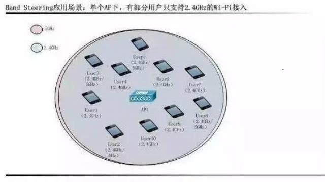
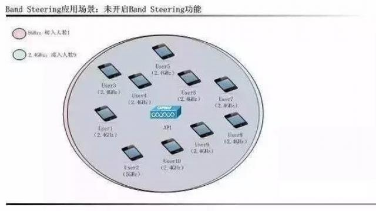
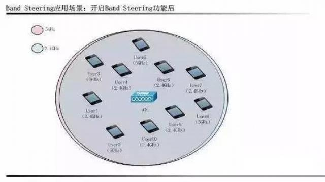

应用背景
在数字通信领域，单位时间的有效数据传输率是衡量一个公司的产品性能的重要指标。在Wi-Fi网络中，2.4GHz频段只有3个未重复的信道，而5GHz频段拥有较多个未重复的信道。
因此，在“热点”区域内，2.4GHz频段的 信道资源会非常紧俏，当在同一信道上的接入用户数量过多时，会导致无线空口竞争加剧，使得网络传输性能下降。
同时，在密集部署情况下，AP间的覆盖范围和 信道常常产生重叠，由此带来的同频干扰也会严重影响无线网络质量。
当“热点”区域同时位于两个AP的覆盖范围内，所有的用户都指向连接同一个AP时，此 时，在一个AP下可能的接入用户量已经接近饱和，而另一个AP下可能只有少量用户，这种不均衡的负载分布同样会导致网络传输性能的下降。因此在这种情况下，SRM应运而生。
术语解释
BandSteering：接入信道引导。
LoadBalance：负载均衡。
AutoChannel &Power Management：自动频率功率管理。
应用场景
BandSteering应用场景

如上图所示，当前AP1下的用户，有部分用户只支持2.4GHz，而其余用户同时支持2.4GHz和5GHz。
在此场景下，当没有Band Steering功能时，由于不能引导用户接入5GHz网络，可能所有或大部分用户都使用2.4GHz接入，造成2.4GHz信道繁忙，而5GHz信道空闲，如下图：

开启Band Streeing功能后，支持5GHz接入的用户将被引导优先接入5GHz，以保证只支持2.4GHz的用户能在此时加入网络，如下图：

Load Balance base on User应用场景

如上图所示，有部分用户同时处在AP1和AP2的覆盖下，这部分用户连接到哪个AP将直接影响到AP的负载能力和用户的接入速率。
在此场景下，当没有Load Balance功能时，User7到User10有可能同时接入到AP1，导致AP1下用户数量远远大于AP2，使得AP1负载过高同时降低用户的流量,如图：
在开启Load Balance后，User7到User10将会被引导接入到AP2中，使得AP1和AP2的负载能均衡分布，如下图：
Load Balance base on Traffic应用场景
除了基于用户的负载均衡外，还有一种基于流量的负载均衡。该种情况发生在，某一个AP下的某些终端的数据流量要求很高，导致无法满足其余用户的数据流量要求。当使用Load Balance功能后，其余用户将接入到另一个接入点，以满足这些用户的流量要求，如图：
AutoChannel and Power management的应用场景

如上图所示，2.4GHz只有3个无重复的信道，所有的AP均只能在这三个信道中选择，而物理相邻的AP之间的信道必须不同。
5GHz信道虽然多余 2.4GHz的信道，但同样需要妥善处理相邻AP之间的信道和功率关系。在没有实现该功能的情况下，必须由网络管理员手动对每一个AP所处的信道和功率进行配置，配置过程不但繁复，而且因为空口信号质量与周围环境息息相关，因此可能导致下雨天或挪动家具后，已经配置好的AP的信道和功率不再满足使用要求。
在这种情况下，为了简化网络管理员的配置过程，一个统揽全局的自动频道及功率调整就显得尤为重要。
实现方式及其特点
Band Steering的实现思路
带宽均衡。带宽均衡功能的提出是在双频AP的5G频谱未被完全利用的情况下。
在这种部署中，BandSteering通过以下方式，鼓励用户弃用拥挤的2.4GHz信道而选用5GHz信道：
- 强制5GHz（Force5GHz）
- 5GHz优先（Prefer5GHz）
- 带宽均衡（BalanceBands）
当启用强制5GHz功能后，AP将在以下情况下隐藏自己的2.4GHz频带（通过不回复Proberequests的方式）：
- 用户已经探测了5GHz信道，并且已知5GHz可用。
- 此时用户在2.4GHz上没有开展会话。
- 此时当前信道的频谱负载均衡可用。
5GHz优先是传统的带宽引导功能：将可以使用5GHz的用户引导使用5GHz的频段。当启用5GHz优先功能后，AP将在以下情况下隐藏自己的2.4GHz频带：
- 用户已经探测了5GHz信道，并且已知5GHz可用。
- 此时用户在2.4GHz上没有开展会话。
- 此时当前信道的频谱负载均衡可用。
- 用户在最近10秒内已经发送了至少8次探测报文。
在带宽均衡模式下，AP会试着去平衡两个Radio下的用户。AP会一直检测用户在11a和11g下的会话情况。
对于每一个在11g频率上会话的用户，AP会考虑在11a频率下的用户数量的”Band_Factor”，并使用该值去运算在2.4GHz和5GHz下，各个频道下的用户数量是否处于一种平衡状 态，并根据结果去控制之后接入的用户。
LoadBalance的实现思路
负载均衡的目的是让用户在AP间均匀分布，以提高每个AP下的用户带宽。其实现的思路是：
- 确定“RFneighborhood”,或者说一组邻近的AP，用户们可以再他们之间任意选择连接。
- 确定在“RFneighborhood”中负载过载的AP。
- 转移视图连接到当前负载过载的AP的用户到邻近的AP中。
计算“RF neighborhood”的方法
- AP支持扫描周围信道信息，用于寻找邻近AP。
- 找到邻近AP后，则可以定义AP2是AP1的“RFneighborhood”，则用户可以同时连接AP1和AP2。
- AP记录接收到的每一个用户的探测（Probe），并使用RSSI来权衡“用户密度”，同时，记录接收到的邻近AP的信息（Beacon）。
- AC通过各个AP上报的Probe、Beacon以及“用户密度”来综合判断是否需要引导用户切换到其他AP上。
Auto Channel and PowerManagement的实现思路
- AC向AP下发信道监控配置参数
- AP进行信道监控，包括对各信道（包括工作信道）的测量，收集各相邻AP的发送功率。
- AP通过RF算法，确认是否需要信道跳转和发射功率调整。
- AP向AC上报预调整信道参数和发射功率。
- AC裁决AP预调整参数是否接受，并配合AP执行。
在AP进行信道监控的过程中，主要需要AP检测一下参数
Coverage Index: 覆盖指数，perchannel，用于指明该信道的覆盖情况，用于判断该信道是否被AP（不区分敌我）覆盖，以及覆盖程度（轻度覆盖／过份覆盖）。
该指标 为AP监听到的工作在该信道上所有AP（可包括监听AP本身，如果该信道为该监听AP的工作信道）的SNR值总和。
Interference Index: 干扰指数，perchannel，用于指明该信道的同信道干扰情况。
该指标为AP监听到的所有AP（不包括监听AP本身）的SNR的总和。
Co-channel InterferenceIndex: 邻频干扰指数，perchannel，用于指明该信道的邻频干扰情况。
该指标为AP监听到的相邻频段的AP的SNR的总和。各AP按照起工作信道与该目标信道的间隔x进行加权统计。
AP将根据以下原因进行信道变更预调
- 雷达规避。
- 信道误码率高。
- 非法信道（不符合国家码规则）。
- 非法AP检测。
- 信道优化选择。
结论
通过Band Steering、Load Balance和AutoChannel and Power Management三种SRM管理功能，能有效的优化Wi-Fi无线网络并提高用户的使用流量。